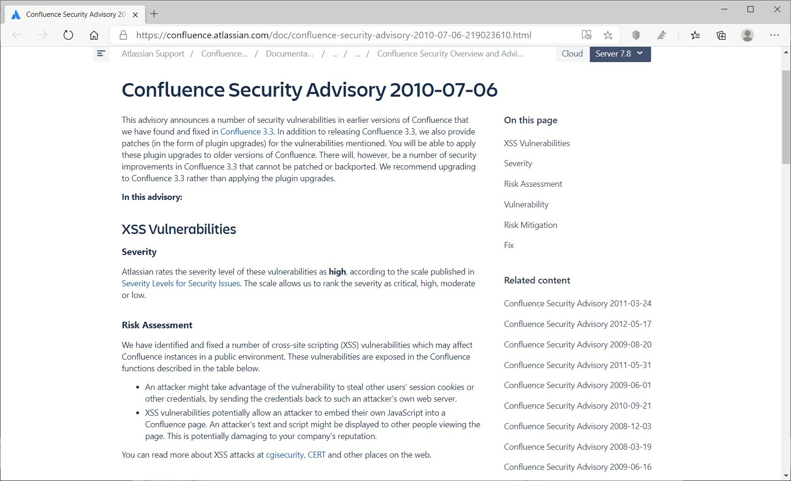
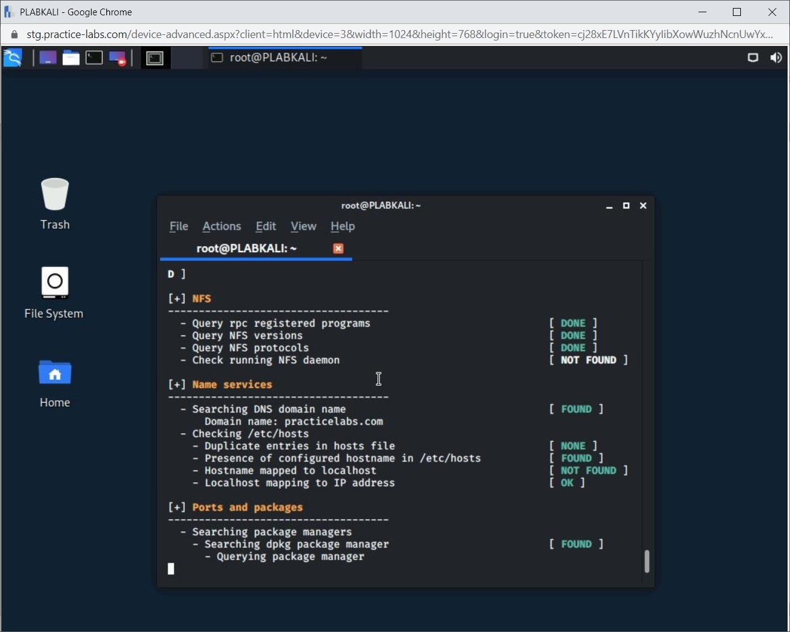
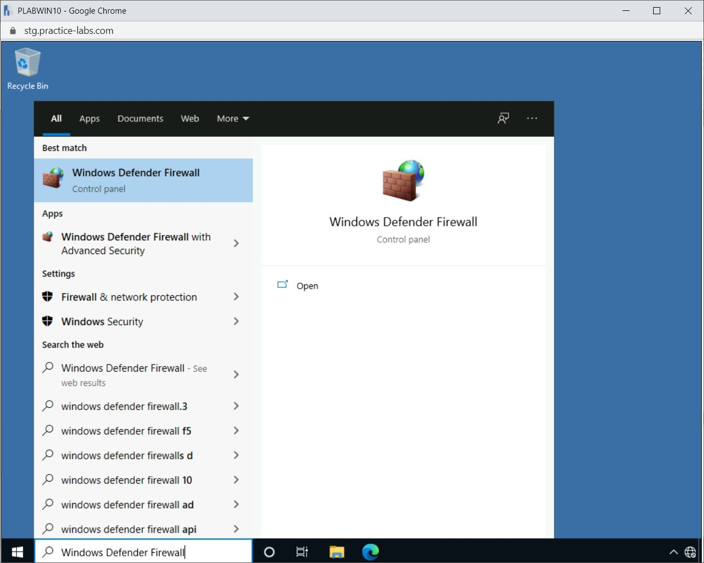

Introduction
bb1840e4-5425-49a3-9d75-477b8f016ff8
Welcome to the Security Assessment Techniques Practice Lab. In this module, you will be provided with the instructions and devices needed to develop your hands-on skills.
dc640c20-9434-45ea-b7c2-6d4d6a196bfc
Learning Outcomes
In this module, you will complete the following exercises:
- Exercise 1 - Threat Hunting
- Exercise 2 - Studying Vulnerability Scans
- Exercise 3 - Exploring Syslog/Security Information and Event Management (SIEM)
After completing this module, you should be able to:
- Perform Log Reviews
- Use Nikto for Web Application Vulnerability Scanning
- Perform Vulnerability Scanning using OpenVAS
- Use Lynis for System Vulnerability Scanning
- Implement SIEM
After completing this module, you should have further knowledge of:
- Intelligence Fusion
- Threat Feeds
- Advisories and Bulletins
- Maneuver
- Configuration Review
- Common Vulnerabilities and Exposures (CVE)/Common Vulnerability Scoring System (CVSS)
- Application, Web Application, and Network
- False Positive
- False Negative
- Credentialed vs. Non-Credentialed Scans
- Intrusive vs. Non-intrusive
- Review Reports
- Packet Capture
- Data Inputs
- User Behavior Analysis (UBA)
- Sentiment Analysis
- Security Monitoring
- Log Aggregation
- Log Collectors
- Security Orchestration, Automation, Response (SOAR)
Exam Objectives
The following exam objectives are covered in this lab:
1.7 Summarize the techniques used in security assessments
- Threat hunting
- Vulnerability scans
- Syslog/Security information and event management (SIEM)
- Security orchestration, automation, response (SOAR)
Note: Our main
focus is to cover the practical, hands-on aspects of the exam
objectives. We recommend referring to course material or a search engine
to research theoretical topics in more detail.
Lab Duration
It will take approximately 1 hour to complete this lab.
c6fa62a3-1a00-4052-8104-258e8cbaa187
Help and Support
For more information on using Practice Labs, please see our Help and Support page. You can also raise a technical support ticket from this page.
Click Next to view the Lab topology used in this module.
d2c53300-f951-45a9-9aa4-3d4ecae69e11
Lab Topology
During your session, you will have access to the following lab configuration.

Depending on the exercises, you may or may not use all
of the devices, but they are shown here in the layout to get an overall
understanding of the topology of the lab.
- PLABDC01 - Windows Server 2019 (Domain Controller)
- PLABDM01 - Windows Server 2019 (Domain Member Server)
- PLABWIN10 - Windows 10 (Domain Member Workstation)
- PLABKALI - Kali 2019.4 (Stand-alone device)
Click Next to proceed to the first exercise.
<
Home |
README >
CompTIA Security+ Practice Labs
Exercise 1 - Threat Hunting
Cyber threats continue to evolve, displaying new
varieties and harder challenges. Together, these factors make it more
difficult to tackle the threats, and organizations are continuously
looking out for more and more sophisticated solutions. Most of the time,
a combination of different methods is required to tackle the onslaught
of the mix of existing and evolving threats.
In this exercise, you will learn about the threat hunting methods.
Learning Outcomes
After completing this exercise, you should have further knowledge of:
- Intelligence Fusion
- Threat Feeds
- Advisories and Bulletins
- Maneuver
Your Devices
This exercise contains supporting materials for Security+.

Intelligence Fusion
You need to know about a threat to tackle it. Threat
intelligence provides insights about the threats and can help the
organization proactively improve security. To provide effective security
measures, organizations must have valid and relevant sources for
intelligence. However, no single threat intelligence source can provide
information about all threats. Some can provide information about
network threats, while others may be specific to physical threats.
Therefore, it is advised to gather information from a
combination of threat intelligence sources. The merging of threat
intelligence information is known as threat fusion. Intelligence fusion
broadens the scope of intelligence gathered about known and emerging
threats.
Threat Feeds
A threat feed is a real-time feed of information about
threats. Threat feeds make you aware of the threats present on the
Internet. Based on the gained information, you can analyze whether your
organization has faced any similar threats or is likely to face any of
these threats going forward. Accordingly, you can prepare the
countermeasures for various threats and ramp-up the security controls.
Along with the real-time information about threats, a threat feed can also list:
- Indicators of compromise (IoC)
- Suspicious domains and IP addresses
- Malware and their hashes
- Compromised IP addresses
- Dictionary SSH attacks
- Domains blacklist
- Botnet IP addresses
- Malware URLs
- Bad IP addresses
- Malware domains list
Figure 1.1 Screenshot of a Windows desktop: Various types of threat feed are listed on the relevant website.
Advisories and Bulletins
A security advisory is a document that details a
vulnerability found in a product. When a product development
organization finds a vulnerability in its product, it usually releases
an advisory that states the vulnerability and methods to minimize the
risk or prevent exposure from the vulnerability.
For example, consider the following security advisory
about a product that contains the Cross-site scripting (XSS)
vulnerability.
Figure 1.2 Screenshot of a Windows desktop: Vulnerability details in a Security Advisory are listed.
In this advisory, the product development organization lists the vulnerability and mitigation methods.
Figure 1.3 Screenshot of a Windows desktop: Remediation details in a Security Advisory are listed.
While advisories are released as and when
vulnerabilities are found, the security bulletins are released monthly.
The product development organization mentions the vulnerabilities in its
products, the remediation methods, and the relevant updates if any.
Here is an example of a monthly security bulletin from Microsoft.
Figure 1.4 Screenshot of a Windows desktop: Security bulletin on the Microsoft website is displayed.
Maneuver
In the old days, maneuver referred to a warfighting
method in which military forces were positioned at a strategic advantage
to the enemy forces. This exercise was supposed to help win a war while
minimizing the loss of life and resources. Similarly, in terms of
cyberspace, maneuver refers to manipulating various technological
resources - applications, codes, and methods - to either attack a target
or defend your network against an attack. For example, if under threat,
your network administrator might install an additional firewall on the
network. This will help deter the attacker and even minimize damage to
the technological resources on your network.
Although the concept of maneuver is similar in
military application and cyberspace application, the similarity ends
there. The characteristics of the two maneuvers are totally different,
mainly because of the differences in the arena of operation.
Characteristics of cyber maneuvering include:
- Speed: Speed is one of the key characteristics of
either type of maneuvering. However, in cyberspace, the attacks occur at
lightning speed and rarely provide the target a chance to defend
itself. By the time the targets react, the damage is already done.
- Reach: In a military maneuver, it might be difficult
to move a large force from one location to another. However, in
cyberspace's virtual realm, it is possible to reach from one end to the
other end of the world without much effort.
- Access: A cyber maneuver can help you get into the
target network and access information and data, which can cripple the
target network and target business to a great extent.
- Anonymity: A cyber maneuver can help you cause severe
damage to the target and yet remain anonymous. In most cases, it might
even be difficult to trace back the attack.
7429868b-128c-4069-95a9-7246a6a9e5a3
<
Home |
README >
CompTIA Security+ Practice Labs
Exercise 2 - Studying Vulnerability Scans
It is common for every operating system or application
to have vulnerabilities. These vulnerabilities must be identified and
closed. Vulnerability scans list out the vulnerabilities identified. To
keep a watch on the health of the network, every organization runs
vulnerability scans regularly. Depending on various factors, the
interval between the scans can differ for each organization. For
example, an organization with thousands of servers may decide to run the
vulnerability scan every six months. However, a smaller organization
may run it every quarter.
In this exercise, you will learn about vulnerability scans.
Learning Outcomes
After completing this exercise, you should be able to:
- Perform Log Reviews
- Use Nikto for Web Application Vulnerability Scanning
- Perform Vulnerability Scanning using OpenVAS
- Use Lynis for System Vulnerability Scanning
After completing this exercise, you should have further knowledge of:
- Configuration Review
- Common Vulnerabilities and Exposures (CVE)/Common Vulnerability Scoring System (CVSS)
- Application, Web Application, and Network
- False Positive
- False Negative
- Credentialed vs. Non-Credentialed Scans
- Intrusive vs. Non-intrusive
Your Devices
You will be using the following devices in this lab. Please power these on now.
- PLABDC01 - Windows Server 2019 (Domain Controller)
- PLABWIN10 - Windows 10 (Domain Member Workstation)
- PLABKALI - Kali 2019.4 (Stand-alone device)
Configuration Review
All hardware devices and software have out-of-the-box
default configuration settings. When installing a hardware device or
software, these default settings are implemented, which might not be
secure. These settings need to be modified as per the network
requirements to make the system secure. For example, consider a wireless
access point (WAP) connected to the network with the default
configuration and user credentials. Anyone with basic knowledge of
networking would be able to break through the WAP, gain unauthorized
access to the network, and damage the whole system.
To avoid such issues, you need to perform a
configuration review of the software and hardware devices. Configuration
reviews help detect security misconfigurations and other issues, such
as out-of-the-box configuration.
Moreover, configuration reviews can be used to
benchmark the devices and software against any organizational
configuration baseline. For example, if you have a configuration
baseline for desktop systems running Windows 10, then all desktops with
Windows 10 can be verified against this baseline. This review will
highlight any configuration deviations that might make the system
unsecured, thereby posing a security threat. Hence, it is advisable to
run configuration reviews regularly.
Common Vulnerabilities and Exposures (CVE)/Common Vulnerability Scoring System (CVSS)
Common Vulnerabilities and Exposures (CVE) are
vulnerabilities in published operating systems and applications
software. These are publicly known cybersecurity vulnerabilities.
When you find several vulnerabilities within your
infrastructure, you would probably not know how to rank them or assign
scores to them. Assigning scores to vulnerabilities helps to prioritize
them based on their severity level. Hence, vulnerabilities with high
scores will be remediated first. Common Vulnerability Scoring System
(CVSS) helps assign a score to each vulnerability. For example, you may
have a vulnerability that is a risk to your data's confidentiality,
integrity, and availability. Using CVSS, you can determine the score.
With multiple vulnerabilities, you can determine the vulnerability has a
high score and must be handled on a priority basis.
The scores are calculated based on several metrics.
Once you define these metrics, you would be able to determine the CVSS
score for a vulnerability. For example, a score of 10 would make a
vulnerability severe. You can also use CVSS calculators that can help
you calculate the scores.
Application, Web Application, and Network
Vulnerabilities are bound to exist in applications,
Web applications, and the network. You use an appropriate vulnerability
scanner to identify these vulnerabilities and close them. The
vulnerability scanners list the vulnerabilities as well as suggestions
and remediations to close them. For example, Nikto for Web server
scanner identifies the vulnerabilities and provides suggestions to close
these vulnerabilities.
Just before you run a vulnerability scan, you need to
scope the run. For example, you specify whether to run the scan on a
single application or the entire network.
False Positive
A vulnerability scan result might list false
positives. False positive refers to a vulnerability that might be listed
as one though it does not exist. For example, a scan result may list a
vulnerability in MySQL, while in reality, the listed vulnerability does
not exist or is not considered a vulnerability.
A vulnerability scanner may show false positives
because it is unable to recognize an executable or a service. The
reasons for this can be:
- To cover up a vulnerability, you may have implemented
a compensating control. Therefore, listing of the vulnerability in a
scan result is a false positive because a compensating control is
already covering the vulnerability.
- The vulnerability scanner does not have updated definitions.
- The scanner configurations are outdated or
irrelevant. This might result in services or configuration settings
marked as false positives.
As a pentester, you must be able to identify false
positives. Each scan result must be researched and analyzed to ascertain
if it is a false positive. This can help avoid wasteful effort in
fixing these vulnerabilities.
False Negative
A false negative is the opposite of a false positive. A
false negative is a vulnerability that exists within the system or
applications but is missed by the scanner. For example, you run a
vulnerability scanner, and it lists only a few vulnerabilities within
the system. Then, you test the operating system and applications with a
second vulnerability scanner and find several new vulnerabilities, which
were missed by the first vulnerability scanner. The missed
vulnerabilities are referred to as false negatives.
Credentialed vs. Non-Credentialed Scans
After you have defined the vulnerability scanning
scope, you also need to decide whether you will be performing a
credentialed or a non-credentialed scan. Depending on your requirement,
you can choose either one.
- Credentialed Scan: To run a credentialed scan,
you need to have administrative access to the system and run the scan
from the administrative account credentials. This scan probes deeper
into the system and provides a more comprehensive vulnerability list. A
credentialed scan is more thorough and takes longer to perform.
- Non-Credentialed Scan: This vulnerability scan
requires no specific credentials. The non-credentialed scan is a
limited scan as it cannot scan deep into the applications or systems
that require credentialed access. It is mainly focused on finding the
open ports and the services or software using these ports. This scan is
quicker with a limited vulnerability list.
Intrusive vs. Non-intrusive
A vulnerability scan can either be intrusive or
non-intrusive. In a non-intrusive vulnerability scan, the scanner only
looks for the vulnerabilities. For example, it can scan for missing
updates or look for open ports. It does not go beyond the scanning
process. The intrusive scan goes one step beyond the non-intrusive scan.
It not only scans for the vulnerabilities, but it also attempts to
exploit them. It is always advisable not to use intrusive scans on
production systems and live applications.
Task 1 - Perform Log Reviews
Each application and the operating system generates
various types of events. These events are captured in logs maintained by
a tool or service within an operating system. The logs can help
determine the cause or origin of an event, say during a forensic
investigation.
Event Viewer is a Windows tool that displays
information about various events happening on your computer. This tool
can help track the event flow while troubleshooting any issues either
with the OS or the installed applications. The Event Log service starts automatically with the Windows OS.
Different types of event logs include:
- Application logs
- System logs
- Security logs
Application and System logs are available to all users; however, security logs are available only to the administrators.
In this task, you will access application logs on the system.
Step 1
Ensure that the required devices are powered on.
Connect to PLABWIN10.
On the Windows desktop, right-click the Start charm and select Event Viewer.
Figure
2.1 Screenshot of PLABWIN10: Context menu (that appears on
right-clicking the Start charm) > Event Viewer menu-options are
selected.
Step 2
The Event Viewer console is displayed. On the navigation pane at the left, expand the Windows Logs node. Notice the different types of logs listed:
- Application: Contains the events that are generated by applications
- Security: Contains security-related events generated by the operating system
- Setup: Contains the application installation-related events
- System: Contains the events generated by the operating system
Select the Application log.
Note: The logs in your device may differ.
 Figure 2.2 Screenshot of PLABWIN10: Available types of Windows logs are listed on the Event viewer console.
Figure 2.2 Screenshot of PLABWIN10: Available types of Windows logs are listed on the Event viewer console.
Step 3
Notice that various events relevant to the
applications on the system are listed in the middle pane. The events
might be labeled as Information, Warning, and Error.
 Figure 2.3 Screenshot of PLABWIN10: Details of Application logs are listed on the middle pane of the Event Viewer console.
Figure 2.3 Screenshot of PLABWIN10: Details of Application logs are listed on the middle pane of the Event Viewer console.
Step 4
Click System in the left pane. Again, notice the different types - Error, Information, and Warning - of events listed.
Note: In your lab environment, there may be a possibility that all of these may not be listed.
 Figure 2.4 Screenshot of PLABWIN10: Details of System logs are listed on the middle pane of the Event Viewer console.
Figure 2.4 Screenshot of PLABWIN10: Details of System logs are listed on the middle pane of the Event Viewer console.
Step 5
Select an event in the middle pane. If your lab environment displays an error event, select it.
Notice that the bottom section of the middle pane displays the details of the Error event.
Following information related to an event is displayed:
- Date and time
- User
- Computer
- Event ID
- Source
- Type
- Log name
Figure
2.5 Screenshot of PLABWIN10: Details of the selected event are listed
on the lower-middle pane on the Event Viewer console.
Step 6
Note that the Windows Logs node lists static
logs - logs common to on all Windows systems. However, a server for
specific services, such as a DNS server, can have DNS logs as well. Such
logs are listed under the Application and Services Logs node.
Expand Applications and Services Logs. Notice that these logs are specific to applications.
 Figure
2.6 Screenshot of PLABWIN10: Details of the Applications and Services
Logs are listed on the middle pane of the Event Viewer console.
Figure
2.6 Screenshot of PLABWIN10: Details of the Applications and Services
Logs are listed on the middle pane of the Event Viewer console.
Close all open windows.
Task 2 - Use Nikto for Web Application Vulnerability Scanning
Nikto is a vulnerability scanner that is part of Kali
Linux. It is widely used by the pentesters and hackers to find
vulnerabilities in Web servers. It performs various tasks, including:
- Scan for the existence of more than one index files
- Verify the installed applications and Webserver
- Verify the Web server configuration
- Verify the outdated files, such as plugins
In this task, you will use Nikto for vulnerability scanning.
Step 1
Ensure that all the required devices are powered on. Connect to PLABKALI. In the Enter your username text box, type the following:
root
In the Enter your password text box, type the following:
Passw0rd
Click Log In or press Enter.
 Figure 2.7 Screenshot of PLABKALI: Required login credentials are typed into the login screen.
Figure 2.7 Screenshot of PLABKALI: Required login credentials are typed into the login screen.
Step 2
After a successful login, the desktop is displayed.
Notice that the terminal window is displayed by default.
Note: In case required, right-click the desktop and select Open Terminal Here to display the terminal window.
To scan a website for vulnerabilities, type the following command:
Note: Instead of the -host parameter, you can also use the -h parameter. Both parameters provide the same result.
nikto -host intranet
Press Enter.
Figure
2.8 Screenshot of PLABKALI: Command to use the nikto tool to scan the
specified website is typed into the terminal window.
Step 3
The vulnerability scanning process starts.
Notice the listed details of the scanned target - Target IP, Target Hostname, Target Port, and Start Time.
Depending on the number of vulnerabilities, the process may run for a few minutes.
Figure 2.9 Screenshot of PLABKALI: Running of the nikto scan is traced on the terminal window.
Step 4
The output gives a detailed list of vulnerabilities.
Figure 2.10 Screenshot of PLABKALI: Output of the nikto scan is listed on the terminal window.
Step 5
You can also specify the port number on which the
Website or Web application should be scanned. To do this, type the
following command:
nikto -host intranet -p 80
Press Enter.
 Figure
2.11 Screenshot of PLABKALI: Command to use the nikto tool to scan a
website at the specified port number is typed into the terminal window.
Figure
2.11 Screenshot of PLABKALI: Command to use the nikto tool to scan a
website at the specified port number is typed into the terminal window.
Step 6
Notice that the process and output are similar to the previous command.
Figure 2.12 Screenshot of PLABKALI: Output of the nikto scan is listed on the terminal window.
Step 7
Clear the screen by entering the following command:
clear
To scan a Website for vulnerabilities and save the output to an HTML file, type the following command:
Note: Instead of the -host parameter, you can also use the -h parameter. Both parameters provide the same result.
nikto -host intranet -o plab.html
Press Enter.
Figure
2.13 Screenshot of PLABKALI: Command to use the nikto tool to scan a
website and save the results in a specified file is typed into the
terminal window.
Step 8
Let the vulnerability scanning process complete.
Then, type the following command:
firefox plab.html
Press Enter.
Figure
2.14 Screenshot of PLABKALI: Command to open the specified file in the
required browser is typed into the terminal window.
Step 9
A new Firefox window opens. Notice that the vulnerabilities are listed on the HTML Webpage.
Close the Firefox window to access the terminal window.
Figure 2.15 Screenshot of PLABKALI: Output file of the nikto scan is displayed in the specified browser.
Keep the terminal window open and proceed to the next task.
Task 3 - Perform Vulnerability Scanning using OpenVAS
Kali Linux provides a tool named the Open
Vulnerability Assessment System (OpenVAS) for vulnerability scanning of
the system on a network. OpenVAS is a framework that consists of
multiple services and tools. OpenVAS requires Python binaries to work.
You will find not always find vulnerabilities every
time you run a vulnerability scanner. If a system is secure enough, then
you may not find even a single vulnerability.
Note: In the current version of Kali, OpenVAS is installed by default.
To perform vulnerability scanning using OpenVAS, perform the following steps:
Step 1
Ensure that the terminal window is displayed on PLABKALI.
Clear the screen by entering the following command:
clear
In the current version of Kali, OpenVAS is installed
by default. Therefore, now you need to setup OpenVAS. To do this, type
the following command:
openvas-setup
Press Enter.
Figure 2.16 Screenshot of PLABKALI: Command to setup openvas is typed into the terminal window.
Step 2
The setup process for OpenVAS now starts. This process downloads many signatures and vulnerability tests.
Note: This
process may take a while to complete. You may also see a few errors
during the installation process. You can safely ignore them for the time
being.
Figure 2.17 Screenshot of PLABKALI: Setting up of openvas is traced on the terminal window.
Step 3
After the setup process is complete, a Firefox window is opened. Minimize it to access the terminal.
Figure 2.18 Screenshot of PLABKALI: Warning Potential Security Risk Ahead screen is displayed on the Firefox window.
Step 4
You are back on the terminal. Notice that the username is created, but there is no password.
Clear the screen by entering the following command:
clear
You need to reset the password for the admin account. To do this, type the following command:
openvasmd --user=admin --new-password=Passw0rd
Press Enter.
Figure 2.19 Screenshot of PLABKALI: Command to reset the admin password for openvas is typed into the terminal window.
Step 5
Since no error is returned, it means that the password for the admin user is now reset.
Figure
2.20 Screenshot of PLABKALI: System-response to the command to reset
the admin password is displayed in the terminal window.
Step 6
Restore the Firefox window by clicking on the icon at the top of the screen.
Figure 2.21 Screenshot of PLABKALI: Firefox icon at the top of the screen is selected.
Step 7
Click Advanced.
Figure
2.22 Screenshot of PLABKALI: Advanced button on the Warning Potential
Security Risk Ahead screen in the Firefox window is selected.
Step 8
Scroll down and click Accept the Risk and Continue.
Figure
2.23 Screenshot of PLABKALI: Accept the Risk and Continue button on the
Warning Potential Security Risk Ahead screen in the Firefox window is
selected.
Step 9
The Greenbone Security Assistant login page is displayed.
In the Username text box, type the following:
admin
In the Password text box, type the following:
Passw0rd
Click Login.
Note: This is the same password you had reset.
 Figure
2.24 Screenshot of PLABKALI: Required login credentials are typed in
and the Login button selected on the login screen of the Greenbone
Security Assistant.
Figure
2.24 Screenshot of PLABKALI: Required login credentials are typed in
and the Login button selected on the login screen of the Greenbone
Security Assistant.
Step 10
The dashboard for OpenVAS is displayed.
You will now perform the scanning. Click Configuration and select Targets.
Figure
2.25 Screenshot of PLABKALI: Configuration > Targets menu-options
are selected on the Greenbone Security Assistant screen.
Step 11
The Targets page is displayed. First, you need to define a target.
Click New Target (*) on the upper left side - just below the menu.
Figure 2.26 Screenshot of PLABKALI: New Target icon on the Targets screen of the Greenbone Security Assistant is highlighted.
Step 12
The New Target dialog box is displayed. In the Name text box, over-type the existing value:
localhost
Click Create.
Alert: You might have to move the window up a bit to display the Create button.
Note: Instead of
choosing the localhost, you can also specify any other host's IP address
on the network. You can also select the From file option and provide a
list of IP addresses. Using the From file option, you can choose to scan
the entire network.
Figure
2.27 Screenshot of PLABKALI: New Target dialog box is displayed showing
the required values typed-in, and the Create button highlighted.
Step 13
Notice that the target is now created.
Next, create a task. Click Scans and then select Tasks.
Figure 2.28 Screenshot of PLABKALI: Scans > Tasks menu-options are selected on the Greenbone Security Assistant screen.
Step 14
The Tasks page is displayed.
Note: A dialog box appears for 10 seconds and then disappear automatically.
Click the Task icon just below the menu bar and select Task Wizard.
Figure 2.29 Screenshot of PLABKALI: Task Wizard icon on the Tasks screen of the Greenbone Security Assistant is highlighted.
Step 15
The Task Wizard is displayed. Keep the IP address as 127.0.0.1 and click Start Scan.
Figure
2.30 Screenshot of PLABKALI: Task Wizard dialog box is displayed
showing the required IP address listed and the Start Scan button
highlighted.
Step 16
Notice that a new task is created. It is named as an Immediate scan of IP 127.0.0.1. It has the status set as Requested.
Figure
2.31 Screenshot of PLABKALI: Newly created task with the status is
listed on the Tasks screen of the Greenbone Security Assistant.
Step 17
Finally, the scan completes, and the Tasks page displays the status.
Click Immediate scan of IP 127.0.0.1.
Figure
2.32 Screenshot of PLABKALI: Completed task with the status is listed
on the Tasks screen of the Greenbone Security Assistant.
Step 18
The finished task details are displayed. Click 1 next to Reports.
Figure
2.33 Screenshot of PLABKALI: Link to the report to display is
highlighted on the Task screen of the Greenbone Security Assistant.
Step 19
Click the link provided under the Date column.
Figure
2.34 Screenshot of PLABKALI: Link to the detailed report to display is
highlighted on the Reports screen of the Greenbone Security Assistant.
Step 20
Notice that there are no vulnerabilities.
 Figure
2.35 Screenshot of PLABKALI: Detailed report with the severity level is
displayed on the Report: Results page of the Greenbone Security
Assistant.
Figure
2.35 Screenshot of PLABKALI: Detailed report with the severity level is
displayed on the Report: Results page of the Greenbone Security
Assistant.
Close the Firefox window.
Task 4 - Using Lynis for System Vulnerability Scanning
Lynis is a built-in multi-purpose tool in Kali Linux. It is designed to perform the following tasks:
- Security auditing
- Compliance testing
- Penetration testing
- Vulnerability detection
- System Hardening
It can perform several types of system auditing, such
as system binaries, boot loaders, startup services, run level, loaded
modules, kernel configuration, core dumps, and so on.
In this task, you will use Lynis for system vulnerability scanning.
To do this, perform the following steps:
Step 1
Ensure that the terminal window is displayed on the PLABKALI desktop.
Clear the screen by entering the following command:
clear
By default, Lynis performs a local system scan. You have the option to run a normal audit scan or an entire system scan.
Lets first run the normal audit scan. Type the following command:
lynis audit system
Press Enter.
Figure
2.36 Screenshot of PLABKALI: Command to use the lynis tool to perform a
local system audit scan is typed into the terminal window.
Step 2
The auditing process starts. Notice that it has already detected the operating system version, its hostname, and so on.
Note: The audit process will take a few minutes to complete.
Figure 2.37 Screenshot of PLABKALI window: Running of the lynis audit process is traced on the terminal window.
Step 3
During the scan process, you will notice that the results are categorized according to the file systems, services, ports, etc.
Figure 2.38 Screenshot of PLABKALI: Results of the lynis scan are listed on the terminal window.
Step 4
The audit process completes.
Figure 2.39 Screenshot of PLABKALI: Completion of the lynis audit process is listed on the terminal window.
Step 5
Scroll up to review the results. Notice the listed
vulnerabilities. Lynis also provides suggestions to close the
vulnerabilities.
For example, in the current listing, it suggests setting the PermitRootLogin to No to harden the SSH configuration.
Note: Take a few
minutes and go through the audit report. If time permits, then you
should use the following command to perform a full audit scan: lynis audit system -c
 Figure 2.40 Screenshot of PLABKALI: Warnings and suggestions of the lynis scan are listed on the terminal window.
80e3ace3-3818-477e-9d50-9fdfea66eb75
Figure 2.40 Screenshot of PLABKALI: Warnings and suggestions of the lynis scan are listed on the terminal window.
80e3ace3-3818-477e-9d50-9fdfea66eb75
<
Home |
README >
CompTIA Security+ Practice Labs
Exercise 3 - Exploring Syslog/Security Information and Event Management (SIEM)
Each application and operating system generates
various types of events. These events are captured in logs maintained by
a tool or service within the operating system. The logs can be useful
during a forensic investigation.
Implementing Syslog/Security Information and Event
Management (SIEM) provides a continuous view of the events, thereby
helping monitor system-health.
A SIEM is the best choice if you want to filter out
unnecessary event information and collate only the required
security-specific events.
In this exercise, you will learn about various features of SIEM.
Learning Outcomes
After completing this exercise, you should be able to:
After completing this module, you should have further knowledge of:
- Review Reports
- Packet Capture
- Data Inputs
- User Behavior Analysis (UBA)
- Sentiment Analysis
- Security Monitoring
- Log Aggregation
- Log Collectors
- Security Orchestration, Automation, Response (SOAR)
Your Devices
You will be using the following devices in this lab. Please power these on now.
- PLABDC01 - Windows Server 2019 (Domain Controller)
- PLABDM01 - Windows Server 2019 (Domain Member Server)
- PLABWIN10 - Windows 10 (Domain Member Workstation)
Review Reports
Each SIEM product generates different review reports -
differing in format and parameters monitored. However, in general,
review reports give a detailed insight into the network traffic
behavior. For example, you can configure the SIEM to detect the system
name, the time, and the number of remote connections.
To make SIEM implementation effective, it is critical
to review the SIEM reports regularly. Reports generated will not hold
any value if they are not reviewed. For example, a system named PLABDM01
has an event logging shutdown. This should be alarming. However,
without reviewing the report, you would have no intimation about this
event.
Figure
3.1 Screenshot of PLABDM01: Graphical representation of the Event
Logging Service Shutdown data is displayed on the EventLog Analyzer
screen.
Packet Capture
Packet capture (pcap) is the process of intercepting
one or more data packets that move through a network. The packets can
either be analyzed when they are captured or can be stored for later
analysis. You may have an Intrusion Detection System / Intrusion
Prevention System (IDS/IPS) deployed on the network that can analyze
these packets and detect possible cyberattacks. You can integrate them
with the SIEM so that the captured packets can be analyzed for security
threats.
Some SIEM may display the capability to analyze the network traffic for security threats.
Data Inputs
Data inputs in a SIEM can come from a variety of
devices and systems. Some SIEM also provides the capability to import
existing logs for analysis.
Figure
3.2 Screenshot of PLABDM01 desktop: Status of the files imported is
listed on the Import Log Files tab on the EventLog Analyzer screen.
Logs can be imported from any device that you have added in SIEM.
Figure
3.3 Screenshot of PLABDM01 desktop: Import Log Data is displayed on the
Import Configuration tab of EventLog Analyzer screen.
User Behavior Analysis (UBA)
Insider threats are a big pain for organizations. In
todays world, organizations are equally prone to danger from outside
and inside the network. UBA, unlike the other security controls, is
focused on insider threats. It monitors the users behavior on the
network, and then based on the analysis of the monitored behavior, it
can detect the anomalies.
UBA focuses on unusual behavior that might originate
from users, processes, or even malware. Unlike SIEM, UBA mainly focuses
on the applications, firewalls, and other devices' logs. The intent is
to detect unusual behavior and raise a flag to help minimize the damage.
It is important to note that UBA can only detect but cannot prevent an
attacker from getting into your network.
Sentiment Analysis
In many cases, cyberattacks are driven by opinions and
for financial reasons. In other cases, the attacks can be reactions to
some social events. Anonymous hackers are one such group that fights for
social causes. In a way, you can say that social sentiments drive
cyberattacks.
Twitter and other social networking sites are a good
dump yard for the users sentiments. Several attacks have taken place
based on the sentiments thats poured on social networking sites. A deep
analysis of views and sentiments shared on these sites can give
insights into the attacks. Performing sentiment analysis of social media
posts can help determine the mood of a person.
Security Monitoring
On a network, it is critical to monitor security
continuously. The administrators must review the event logs and draw
analysis out of them. SIEM can complement security monitoring in a great
way. Not only can it monitor the security of the systems, but it can
also review logs and generate alerts as and when required.
Hackers can delete the logs before exiting a device or
a system. This is a standard practice to ensure removing their traces.
However, SIEM uses the Write Once Read Many (WORM) functionality, in
which the data cannot be modified once it is written.
Log Aggregation
Log aggregation is one of the features of SIEM. It can
collate logs from different devices on the network, including servers,
appliances, and firewalls. The log aggregation implements deduplication
technology that does not collate duplicate data.
After installing SIEM, you configure aggregation -
collecting events from multiple sources. After that, you configure
correlation. The correlation engine performs deduplication - removing
duplicate events from various sources.
It is especially important to understand that in SIEM,
time synchronization across sources is extremely critical. It must be
configured before putting the SIEM appliance on the network.
Log Collectors
The main job of SIEM is to collect logs and store them
in a central location and further analyze them for security issues. The
log collection is done using several methods, such as installing an
agent on the target device. These agents are known as log collectors.
The log collectors' main job is to continue to run on
the target device, read through the event logs, parse them, and send
them to the SIEM server, where an aggregator stores them. The SIEM
server analyzes the logs to draw conclusions.
Security Orchestration, Automation, Response (SOAR)
SOAR is a combination of tools and technologies that
help an organization strengthen its security. As and when there is an
incident, the automated processes are designed to handle the incident.
It can be configured to perform various tasks, such as data collection,
standardization, and analytics, as well as handle security alerts and
alarms in an automated manner. Therefore, implementing SOAR helps save
the organization several hundred man-hours and remove the limitations of
manual intervention. For example, SIEM may generate too many alerts
that the security team can handle. SOAR can be integrated to handle this
load.
SOAR can help the organization build an in-depth
defense posture. For example, with SOAR, you can collect the alerts and
alarm data in a central location for further analysis. You can also
create custom and complex workflows to strengthen the security posture.
Task 1 - Implement SIEM
There are various SIEM products available in the
market. Some of them are commercial, free, or open-source. Each product
has its capabilities and features that mostly overlap with other
products. ManageEngine EventLog Analyzer is one of the SIEM products
with several features that can be used for event log management. Some of
the features are:
- Software Information and Event Management
- Event log management
- Syslog management
- Application log monitoring
- Server log management
- Oracle and SQL database auditing
- Real-time event correlation
- Real-time event alerting
- Network device monitoring
- IT compliance reporting
- Security log monitoring
- Event log monitoring
- GDPR compliance reports
In this task, you will use ManageEngine EventLog Analyzer.
Step 1
Ensure that the required devices are powered on.
Connect to PLABWIN10.
In the Type here to search text box, type the following:
Windows Defender Firewall
Press Enter.
Figure 3.4 Screenshot of PLABWIN10: Windows Defender Firewall option on the search menu is selected.
Step 2
In the Windows Defender Firewall window, click the Turn Windows Defender Firewall on or off in the left pane.
Figure
3.5 Screenshot of PLABWIN10: Turn Windows Defender Firewall on or off
link on the Windows Defender Firewall window is highlighted.
Step 3
Select Turn off Windows Defender Firewall (not recommended) for all the three listed networks - Domain, Private, and Public.
Click OK.
Figure
3.6 Screenshot of PLABWIN10: Customize Settings screen is displayed
showing the required selections performed and the OK button highlighted.
Close Windows Defender Firewall.
Step 4
Connect to PLABDM01.
Close the Server Manager console displayed by default.
Click the Start charm, select Log360, and then select Install Log360 as Service.
You may notice a box appear for a moment and then it disappears, this can be ignored.
Figure 3.7 Screenshot of PLABWIN10: Install Log360 as Service is highlighted under the Log360 folder.
Step 5
Click the Start charm or the magnifying glass icon in the lower left to search the system, input Services and click the result.
Figure
3.8 Screenshot of PLABWIN10: Services has been searched for and is
highlighted after clicking the start charm or magnifying glass in the
lower left.
Step 6
The Services window appears.
Scroll down the services listed to locate ManageEngine Log360.
Right click the service and click Start.
Another box will appear informing you that the service is starting, please wait for this to complete.
 Figure
3.9 Screenshot of PLABWIN10: The Services window has appeared and the
required service ManageEngine Log360 is highlighted.
Figure
3.9 Screenshot of PLABWIN10: The Services window has appeared and the
required service ManageEngine Log360 is highlighted.
Step 7
The service should now state Running under the Status column.
Minimize the Services window.
Click the Start charm, select Log360, and then select Start Log360.
Figure
3.10 Screenshot of PLABDM01: Context menu (that appears on the Start
charm) > Log360 > Start Log360 menu-options are selected on the
Start menu.
Step 8
The User Account Control dialog box may appear. Click Yes if shown.
Figure 3.11 Screenshot of PLABDM01: Yes button on the User Account Control dialog box is highlighted.
Step 9
The ManageEngine EventLog Analyzer splash screen is displayed, indicating that the eventlog analyzer is setting up.
This might take a while.
Figure 3.12 Screenshot of PLABDM01: Setup status of the EventLog Analyzer is listed on the splash screen displayed.
Step 10
The Log360 website is displayed. Notice that the username and password are already entered for you. Click LOGIN.
Note: If the Log360 website is not displayed immediately, click the Start charm and select Log360 > Start Log360 again.
Figure
3.13 Screenshot of PLABDM01: Required login credentials are typed-in,
and the Login button highlighted on the Log360 login screen.
Step 11
If you are prompted to save a password, click Never.
Figure 3.14 Screenshot of PLABDM01: Never button on the Save password dialog box is highlighted.
Step 12
The Log360 dashboard is displayed. In the left pane, click EventLog.
Figure 3.15 Screenshot of PLABDM01: EventLog Analyzer icon on the menu bar at the left on the Log360 dashboard is highlighted.
Step 13
The EventLog Analyzer page is displayed. Notice that the dashboard contains various graphs. In the top pane, click the Settings tab.
If you receive an error when
accessing the EventLog section, reopen the Services window and click the
refresh towards the top of the window as a new service will appear
labelled ManageEngine EventLog Analyser followed by the version number.
Right click this Service and select Restart.
Afterward, close the
Microsoft Edge browser window with the EventLog Analyser open to then
click the Start button, locate and click Start Log360 again, the
previous steps detailed can be followed to reach the EventLog Analyzer
section again.
Note: You can scroll down to view more graphs.
Figure 3.16 Screenshot of PLABDM01: Settings tab on the EventLog Analyzer screen is highlighted.
Step 14
On the Configuration Settings page in the right pane, click the Manage Devices tile.
Figure
3.17 Screenshot of PLABDM01: Manage Devices tile on the Configuration
Settings page of the EventLog Analyzer screen is highlighted.
Step 15
On the Device Management page, there are already two devices added. To add more devices, click Add Device(s).
Figure 3.18 Screenshot of PLABDM01: Add Devices(s) button on the Device Management page is highlighted.
Step 16
On the Add device dialog box, select PLABWIN10 and click Add.
Figure
3.19 Screenshot of PLABDM01: Add device dialog box is displayed showing
the required device selected and the Add button highlighted.
Step 17
Notice that PLABWIN10 is now added as the device.
Note: There could be a slight delay before PLABWIN10 device appears on the list.
 Figure 3.20 Screenshot of PLABDM01: All the added devices are listed on the Device Management page.
Figure 3.20 Screenshot of PLABDM01: All the added devices are listed on the Device Management page.
Step 18
Click the Home tab.
Figure 3.21 Screenshot of PLABDM01: Home tab on the EventLog Analyzer screen is selected.
Step 19
On the dashboard in the upper right corner, the All Devices section now lists three devices.
Note: The
different sections of data is regularly updated. Therefore, you may see a
difference in the number of events that in the screenshots.
Figure
3.22 Screenshot of PLABDM01: Newly added device is now listed on the
Top 5 Devices section of the EventLog Analyzer screen.
Step 20
Click on the Reports tab.
Figure 3.23 Screenshot of PLABDM01: Reports tab on the EventLog Analyzer screen is highlighted.
Step 21
By default, Windows Events - All Events tab is displayed. Notice the several types of event reports available for review.
In the left pane, click Threat Detection.
Figure
3.24 Screenshot of PLABDM01: Threat Detection option is listed on the
navigation pane at the left on the Reports tab of the EventLog Analyzer
screen.
Step 22
Under Threat Detection, click Event Logging Service Shutdown.
Figure
3.25 Screenshot of PLABDM01: Event Logging Service Shutdown option is
listed on the navigation pane at the left on the Reports tab of the
EventLog Analyzer screen.
Step 23
The right pane displays one event of Event Logging Service shutdown. There are other reports in the left panel that you can explore in your spare time.
Figure
3.26 Screenshot of PLABDM01: Graphical representation of the Event
Logging Service Shutdown data is displayed on the Reports tab of the
EventLog Analyzer screen.
Note: There might
be a slight delay before a report is generated for the Event Logging
Service Shutdown. The page can be refreshed to see if a report is
available. If you are continuously shown that no data is available,
please continue to the following step.
Step 24
Click the Home tab.
Figure 3.27 Screenshot of PLABDM01: Displaying selecting the Home tab in the Log360 web application.
Step 25
On the Home tab, select the Security Overview tab.
Figure 3.28 Screenshot of PLABDM01: Displaying selecting the Security Overview tab on the Home page.
Step 26
In the Security Overview tab, the security incidents that have occurred on the network can be investigated.
Note: There may not be data available in the different sections for you compared to the following screenshot.
Figure 3.29 Screenshot of PLABDM01: Displaying the Security Overview tab in the Log 360 SIEM application.
89702e5d-d25a-44d4-b0df-b081bb2e2dbd
d31298f5-3011-4089-bf06-fbf08c44a7f9
Keep all devices that you have powered on in their current state and proceed to the review section.
Review
Well done, you have completed the Security Assessment Techniques Practice Lab.
c6e74811-6d1f-4779-94c2-34fcca239022
596e8e51-0974-4079-a9e4-a8ba2f56dccd
1c6ca9c1-8101-4ed4-8dd8-40d1f08d3e3d
46d64406-19ac-425f-baae-8f8c365eb329
d9814c4f-4bc1-4a36-8783-87c6c927e8a3
fa4b2918-2f42-49d4-b9e7-667ed02f36ba
aaaaaaaa-1111-1111-1111-193f35a24fe3
Summary
You completed the following exercises:
- Exercise 1 - Threat Hunting
- Exercise 2 - Studying Vulnerability Scans
- Exercise 3 - Exploring Syslog/Security Information and Event Management (SIEM)
You should now be able to:
- Perform Log Reviews
- Use Nikto for Web Application Vulnerability Scanning
- Perform Vulnerability Scanning using OpenVAS
- Use Lynis for System Vulnerability Scanning
- Implement SIEM
You should now have further knowledge of:
- Intelligence Fusion
- Threat Feeds
- Advisories and Bulletins
- Maneuver
- Configuration Review
- Common Vulnerabilities and Exposures (CVE)/Common Vulnerability Scoring System (CVSS)
- Application, Web Application, and Network
- False Positive
- False Negative
- Credentialed vs. Non-Credentialed Scans
- Intrusive vs. Non-intrusive
- Review Reports
- Packet Capture
- Data Inputs
- User Behavior Analysis (UBA)
- Sentiment Analysis
- Security Monitoring
- Log Aggregation
- Log Collectors
- Security Orchestration, Automation, Response (SOAR)
Feedback
067744a4-4299-4662-b5be-04dbb636a007
Shutdown all virtual machines used in this lab. Alternatively, you can log out of the lab platform.